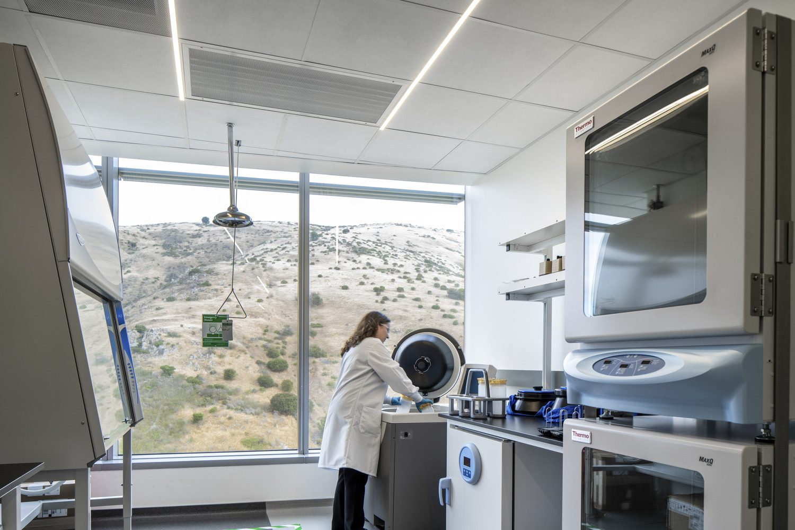

The founder
Amrit Chaudhuri
Synthetic chemist and bioengineer. Founder and former CEO of Advanced Peptides, co-founder and former CEO of SmartLabs, and the founder of APC Science.

Synthetic chemist and bioengineer. Founder and former CEO of Advanced Peptides, co-founder and former CEO of SmartLabs, and the founder of APC Science.
Amrit Chaudhuri has spent his career on both sides of drug development: building the molecules, and building the companies and systems that produce them. A synthetic chemist and biomedical engineer by training, he started his first company in his twenties and has been turning hard science into working programs ever since.
He founded Advanced Peptides in 2007 and ran it as CEO, after years at the bench convinced him he could do the hardest peptide chemistry better than the contract labs his own projects relied on. The thesis was simple: take on the problems others returned late or unsolved, deliver better science, and let universities and pharmaceutical companies fund the labs and the people. Over the next eight years the firm completed more than 3,000 projects for over 120 organizations, among them Harvard, Stanford, MIT, Yale, Princeton, Oxford, and A*STAR, and pharmaceutical companies including Pfizer, Merck, Johnson & Johnson, and Bayer.
The work grew well beyond synthesis into conjugation, ligands and proprietary scaffolds, formulation, scale-up, GMP and GLP programs, preclinical and IND-enabling studies, patent strategy, and in some cases product launch. The team also built one of the earliest machine-learning platforms for peptide design and later spun it out to a partner. A peptide technology Amrit co-developed was patented and commercialized into a global product platform.
In 2014 he co-founded the company that became SmartLabs and led it as CEO for nearly a decade, giving biotech teams enterprise-grade labs and operations on demand, without the cost and permanence of traditional construction. CRISPR Therapeutics was the first tenant; the early work it did in that space later contributed to the first FDA-approved CRISPR therapy. The company pioneered modular, reconfigurable labs, raised more than $400M in private capital, scaled across Boston and South San Francisco, and created what came to be called the Lab-as-a-Service category. He stepped aside in 2024 as the company moved from invention to steady operation.
In 2017, while still leading SmartLabs, he founded APC Science as a separate vehicle for the work that fell outside the platform: the unusual programs and one-off projects he wanted to take on directly, from conjugates and ligands to hard development problems other groups had set aside. When he stepped aside from SmartLabs in 2024, APC Science became his focus.
Running a research platform alongside that work gave him something few chemists ever get: a wide-angle view of hundreds of programs across gene editing, cell and gene therapy, immuno-oncology, and beyond. That combination, depth in the chemistry and breadth across the field, is what APC Science is built on.
Most programs don't need more options. They need the highest-value path that's actually feasible, an honest read on what isn't, and the way around it.Amrit Chaudhuri, Founder
A specialty peptide and conjugate chemistry company started in his twenties. More than 3,000 projects across 120+ academic and pharmaceutical organizations over eight years, growing from synthesis into GMP and IND-enabling work, plus an early machine-learning platform for molecular design.
Co-founded the company that became SmartLabs and led it for nearly a decade. CRISPR Therapeutics was the first tenant. The company pioneered modular, reconfigurable labs, raised over $400M, scaled across two coasts, and created the Lab-as-a-Service category.
Founded in 2017 to take on unusual programs and projects alongside his work at SmartLabs, and his focus since 2024. An independent consultancy pairing drug development strategy, planning, and operations across modalities and stages with deep technical chemistry for peptides, antibodies, conjugates, and ligands.
Full record, press, and patents: amritchaudhuri.com · Crunchbase · LinkedIn

Tell us where your program is and the decision in front of you.
Talk through your program